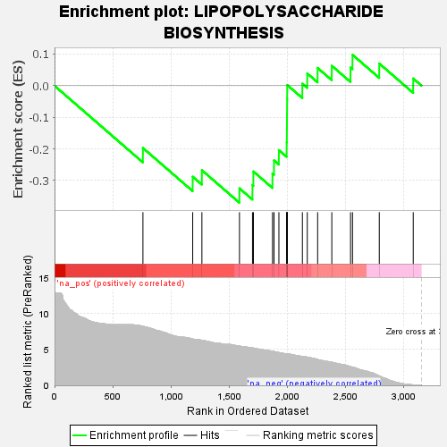
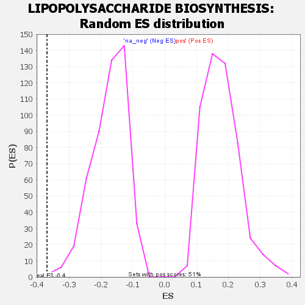

| | | Dataset | GSEA RNK clr Maaslin2 MucosalvsLuminal KO - Jejunum.rnk |
| Phenotype | NoPhenotypeAvailable |
| Upregulated in class | na_neg |
| GeneSet | LIPOPOLYSACCHARIDE BIOSYNTHESIS |
| Enrichment Score (ES) | -0.37001798 |
| Normalized Enrichment Score (NES) | -2.1062856 |
| Nominal p-value | 0.0020491802 |
| FDR q-value | 0.040946785 |
| FWER p-Value | 0.14 |
Table: GSEA Results Summary

Fig 1: Enrichment plot: LIPOPOLYSACCHARIDE BIOSYNTHESIS
Profile of the Running ES Score & Positions of GeneSet Members on the Rank Ordered List

Fig 2: LIPOPOLYSACCHARIDE BIOSYNTHESIS: Random ES distribution
Gene set null distribution of ES for LIPOPOLYSACCHARIDE BIOSYNTHESIS